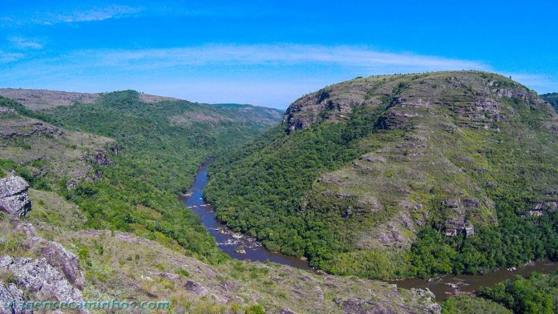
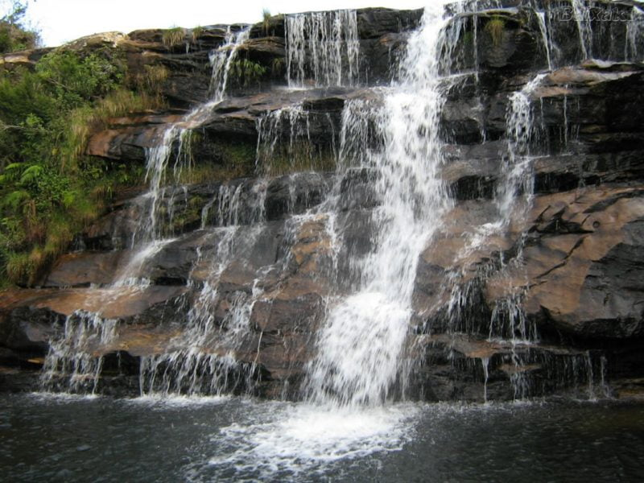

A História do Caniôn de Guartelá
Bem-vindo ao portal definitivo sobre o Cânion do Guartelá, uma das maiores joias naturais do Paraná! Localizado nos Campos Gerais, este que é o sexto maior cânion do mundo impressiona por suas formações rochosas e biodiversidade. Aqui você vai explorar a fascinante história dos tropeiros, que deixaram suas marcas e deram nome à região. Descubra a rica herança dos primeiros povos indígenas através de pinturas rupestres preservadas ao longo dos séculos. Nossos guias trazem as melhores dicas de trilhas, mirantes e banhos em piscinas naturais no Rio Iapó. Seja para praticar o ecoturismo ou para contemplar paisagens de tirar o fôlego, este é o seu ponto de partida. Prepare-se para se conectar com a força da natureza e o orgulho da cultura paranaense em cada detalhe. Embarque nesta jornada e planeje uma experiência inesquecível pelo coração do Parque Estadual do Guartelá!

Imagens do Cânion de Guartelá
O Cânion do Guartelá é um marco fundamental na formação da identidade natural e cultural paranaense. Ele representa a rica herança geológica e a imensidão das paisagens dos Campos Gerais do Paraná. Sua história está ligada aos **tropeiros**, que usavam a região como rota estratégica no século XVIII. O nome "Guartelá" remete a essa tradição e ao folclore local, simbolizando a hospitalidade da região. A presença de **pinturas rupestres** resgata a memória dos primeiros povos indígenas que habitaram o estado. Sendo o sexto maior cânion do mundo, desperta um profundo sentimento de orgulho e pertencimento nos paranaenses. Sua preservação no Parque Estadual consolida o compromisso do estado com a sustentabilidade e o ecoturismo. O Rio Iapó, que corta a garganta de pedra, desenha uma das paisagens mais icônicas da geografia local. O local serve como um elo vivo entre o passado histórico, a cultura tropeira e a natureza preservada. É um destino de contemplação que fortalece as raízes e a valorização do patrimônio interiorano. O Guartelá sintetiza a força, a história e a beleza natural que definem o espírito do Paraná.
